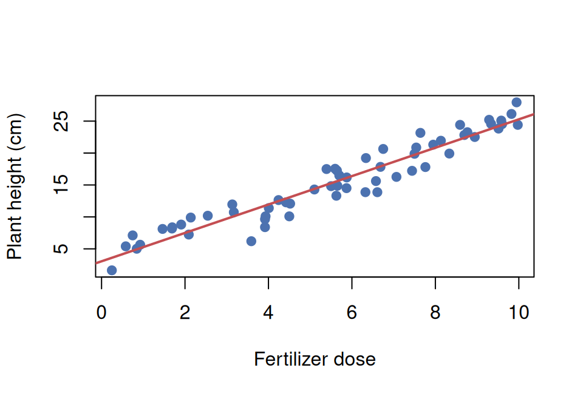
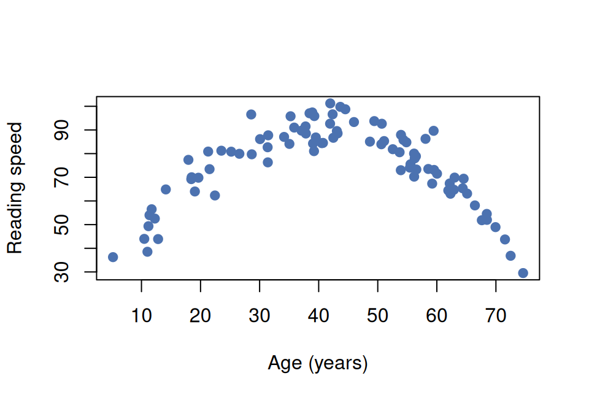

Module 5, Synthesis Quiz
Question bank · After exercise lab · open notes · two attempts
Module 5, Synthesis quiz
Readings: Read 0, Read 1
Labs: Demo, Exercise
Canvas: Synthesis quiz (Module 5) · two attempts, highest score counts
Pulls together the Module 5 skills: read scatterplots, interpret \(r\), interpret regression output, predict with predict(), and distinguish a confidence interval for the mean from a prediction interval for an individual.
Instructions
- Open notes (methods map, R reference).
- Use the interpretation templates from Read 1.
- For R items, match the workflow in the demo lab.
Section A, Reading a scatterplot
A1. Describe an association
Using the scatterplot above, describe the association between fertilizer dose and plant height using form, direction, and strength.
A2. Curved vs linear

For the relationship shown above, is Pearson correlation \(r\) an appropriate single-number summary? Explain.
Click to reveal answers, Section A, Reading a scatterplot
Form: roughly linear. Direction: positive (more fertilizer → taller plant). Strength: strong (points cluster tightly).
No, Pearson \(r\) measures linear association only. A curved (non-linear) form makes \(r\) a misleading summary of the relationship.
Section B, Interpreting correlation and regression output
B1. Interpret r
R gives cor(exercise_min, resting_hr) = −0.78. Interpret this value in context.
B2. Interpret regression output
A regression predicts resting heart rate (bpm) from daily exercise minutes. R output: (Intercept) 79.1, exercise_min −0.30. Write the fitted equation and interpret the slope.
B3. Point prediction
A fitted model is \(\hat{\text{resting HR}} = 79.1 - 0.30\,(\text{daily exercise minutes})\). Predict resting heart rate for someone who exercises 30 minutes per day.
B4. Residual computation
A fitted model is \(\hat{\text{resting HR}} = 79.1 - 0.30\,(\text{daily exercise minutes})\). A person who exercises 30 minutes per day has an observed resting HR of 74 bpm. Compute their residual.
Click to reveal answers, Section B, Interpreting correlation and regression output
Strong negative linear association: as daily exercise minutes increase, resting heart rate tends to decrease. The relationship is strong (\(|r|\) close to 1).
\(\hat{\text{resting HR}} = 79.1 - 0.30\,(\text{exercise min})\). Slope: each additional minute of daily exercise is associated with a predicted 0.30 bpm decrease in resting heart rate.
\(\hat{y} = 79.1 - 0.30(30) = 79.1 - 9.0 = 70.1\) bpm.
Residual \(= 74 - 70.1 = 3.9\) bpm, they have a resting HR 3.9 bpm higher than the model predicts.
Section C, Match the R output to the interpretation
Each item shows one R call and its output for a model predicting plant height (cm) from fertilizer dose. Every interpretation listed is correctly worded, but only one matches the R call. Pick the matching letter.
C1. confint() on the predictor
confint(fit_plant, "dose", level = 0.95)
#> 2.5 % 97.5 %
#> dose 1.7 2.6Which interpretation matches this output?
- Each additional unit of fertilizer dose is associated with a change in the mean plant height of between 1.7 and 2.6 cm (95% confidence).
- The mean height of all plants given 7 units of dose is between 1.7 and 2.6 cm (95% confidence).
- One new plant given 7 units of dose will be between 1.7 and 2.6 cm tall (95% confidence).
- The mean height of plants given 0 units of dose is between 1.7 and 2.6 cm (95% confidence).
C2. predict() with interval = “confidence”
predict(fit_plant, newdata = data.frame(dose = 7),
interval = "confidence", level = 0.95)
#> fit lwr upr
#> 1 24.2 22.8 25.6Which interpretation matches this output?
- Each additional unit of dose changes the mean height by between 22.8 and 25.6 cm (95% confidence).
- The mean height of all plants given 7 units of dose is between 22.8 and 25.6 cm (95% confidence).
- One new plant given 7 units of dose will be between 22.8 and 25.6 cm tall (95% confidence).
- The mean height of plants given 0 units of dose is between 22.8 and 25.6 cm (95% confidence).
C3. predict() with interval = “prediction”
predict(fit_plant, newdata = data.frame(dose = 7),
interval = "prediction", level = 0.95)
#> fit lwr upr
#> 1 24.2 13.1 35.3Which interpretation matches this output?
- One new plant given 7 units of dose will be between 13.1 and 35.3 cm tall (95% confidence).
- The mean height of all plants given 7 units of dose is between 13.1 and 35.3 cm (95% confidence).
- Each additional unit of dose changes the mean height by between 13.1 and 35.3 cm (95% confidence).
- The mean height of plants given 0 units of dose is between 13.1 and 35.3 cm (95% confidence).
Click to reveal answers, Section C, Match the R output to the interpretation
confint()on the dose row is the confidence interval for the slope, a per-one-unit change in the mean height. The other options correctly word the mean-response, individual, and intercept intervals, which come from different R calls.
interval = "confidence"gives the confidence interval for the mean response at the chosen dose of 7, the average height of all plants given 7 units.
interval = "prediction"gives the interval for one individual new plant at a dose of 7, which is why it is wider than the mean-response interval in C2.
Section D, Mean-response CI vs prediction interval
D1. Identify correct interval
A biologist wants to estimate the average plant height for all plants given exactly 7 units of fertilizer. Should they use interval = 'confidence' or interval = 'prediction'?
D2. Identify correct interval, individual
A researcher wants an interval for one specific new plant given 7 units of fertilizer. Which interval?
D3. Width comparison
For a regression of plant height (cm) on fertilizer dose, at \(x_0 = 7\) units the mean-response CI is \([22.8, 25.6]\) and the individual prediction interval is \([13.1, 35.3]\). What accounts for the large difference in width?
Click to reveal answers, Section D, Mean-response CI vs prediction interval
interval = 'confidence', this estimates where the mean response (average outcome) falls, not an individual plant.interval = 'prediction', this covers where one individual future observation is likely to fall.The PI adds individual-to-individual variability on top of uncertainty in the mean. Even if we knew the mean exactly, individual plants would vary widely around it.
Section E, Putting it together in R
E1. R workflow: fit and predict
Write the R commands (in order) to: (1) fit a regression of resting_hr on exercise_min using heart_dat, (2) extract the slope CI, (3) predict with a 95% PI at exercise_min = 30.
E2. Interpreting lm() output
For a fitted model of resting heart rate (bpm) on daily exercise minutes, summary(fit) shows the exercise_min row with Estimate −0.30, Std. Error 0.06, and Pr(>|t|) = 0.0003. What do these tell you?
Click to reveal answers, Section E, Putting it together in R
fit <- lm(resting_hr ~ exercise_min, data = heart_dat) confint(fit, 'exercise_min') predict(fit, newdata = data.frame(exercise_min = 30), interval = 'prediction')- Slope estimate: −0.30 bpm per minute of daily exercise. The test \(H_0:\beta_1=0\) rejects at \(p=0.0003\), strong evidence of a linear association. The SE of 0.06 reflects uncertainty in the slope estimate.
Section F, Choosing the right method
F1. Method choice
Your response variable is a numerical measurement and your explanatory variable is another numerical measurement. Which method from the methods map applies, and which R functions would you use?
Click to reveal answers, Section F, Choosing the right method
- Simple linear regression, two numerical variables; use
lm(y ~ x)for the model,confint()for the slope CI, andpredict(..., interval = )for response intervals.
Reuse
Creative Commons Attribution-NonCommercial 4.0 International(View License)